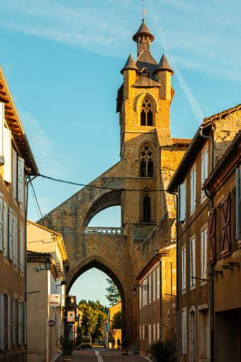

Mirande naît en 1281 d'une décision politique mûrement réfléchie : faire venir le monde en un lieu choisi au cœur des vallons de l'Astarac. Comme la plupart des bastides du Sud-Ouest, cette ville nouvelle est pensée pour dynamiser le commerce et affirmer l'autorité royale en province. Le projet réunit trois figures : Eustache de Beaumarchès, sénéchal de Toulouse au nom du roi, Bernard IV, comte d'Astarac, et Pierre de Lamaguère, abbé du monastère cistercien de Berdoues. Un contrat de paréage, signé dès 1282, scelle leur association et fixe le partage à parts égales des droits et bénéfices de la fondation.

Mirande et son plan en damier, hérité du XIIIe siècle
Construite au cordeau autour d'une halle en bois, selon le tracé régulier propre aux bastides, la cité s'achève vers 1288 : rues dessinées en damier, place centrale à arcades, enceinte percée de quatre portes et château comtal dressé hors les murs. Ce plan si particulier, où chaque rue se coupe à angle droit, se découvre aujourd'hui encore au rythme de la promenade, entre ruelles moyenâgeuses et fraîches arcades animées.
Aux XIVe et XVe siècles, Mirande affirme son rang avec l'édification de son ancienne cathédrale, chef-d'œuvre du gothique méridional : achevée en 1409, l'église Sainte-Marie domine la cité de sa silhouette monumentale. Devenue sous-préfecture à la Révolution, la ville s'enrichit ensuite de bâtiments remarquables du Second Empire, l'Hôtel de Ville et la Sous-préfecture, avant de conjuguer aujourd'hui tradition et art de vivre gascon, avec ses 3 500 habitants.
Labellisée Cittaslow, ce réseau international des « villes où il fait bon vivre », Mirande a fait du temps retrouvé sa marque de fabrique : on y flâne sous les arcades, on s'attarde sur la place, sans jamais renoncer à sept siècles d'histoire capitale de l'Astarac.
🌿
Visite pratique
⏱️
Durée
Environ 2h (bastide + musée)
📊
Difficulté
Facile, plan en damier plat
🚗
Accès
25 km au sud-ouest d'Auch
🤠
Festival Country
Chaque année en juillet
✦ Infos pratiques
Église Sainte-Marie Porche-clocher unique en France, enjambant la rue
Musée des Beaux-Arts Toiles flamandes et italiennes, faïences anciennes
Halle Baltard Charpente du XVIIIe siècle, style Baltard
Place d'Astarac Arcades médiévales, cœur de vie de la bastide
Festival Country Concerts, danses et ambiance western en juillet
Complexe Ludina Espace aqua-ludique pour toute la famille
1
La place d'Astarac
Sous ses arcades, la place raconte le temps où Mirande était la capitale du comté : terrasses animées et façades médiévales encadrent le cœur de la bastide.
2
L'église Sainte-Marie
Achevée en 1409, elle est surmontée d'un porche-clocher unique en France, soutenu par de puissants arcs-boutants qui enjambent la rue.
3
L'Hôtel de Ville et la Sous-préfecture
Bâtiments remarquables du Second Empire, témoins du rang administratif acquis par Mirande à la Révolution.
4
Le Musée des Beaux-Arts
L'un des fonds d'art classique les plus riches du département, avec notamment la canne offerte par la famille de Noé, liée à Toussaint Louverture.
5
La halle du XVIIIe siècle
De style Baltard, elle rappelle la vocation commerçante de la bastide depuis sa fondation autour d'une halle en bois.
🏆
Reconnaissance & patrimoine
🐌
Réseau Cittaslow
Mirande fait partie du réseau international des « villes lentes », qui valorise la qualité de vie, le temps retrouvé et les circuits courts.
⭐ Label international
🏛️
Bastide remarquable de l'Astarac
L'un des plans en damier les mieux conservés du Gers, capitale historique du comté d'Astarac depuis 1281.
Depuis le XIIIe s.
🖼️
Musée des Beaux-Arts
Avec celui d'Auch, il constitue le fonds d'art classique le plus riche du département du Gers.
Collection départementale
⛪
Le porche-clocher, prodige du gothique méridional
Rien n'annonce, en arrivant place d'Astarac, la prouesse architecturale qui domine la bastide. L'église Sainte-Marie, achevée en 1409, s'est vue coiffée d'un porche-clocher que l'on ne trouve nulle part ailleurs en France : de puissants arcs-boutants s'élancent au-dessus de la rue elle-même, portant le clocher comme un pont suspendu au-dessus des passants. L'édifice tout entier, chef-d'œuvre du gothique méridional, impose sa silhouette à des kilomètres à la ronde.
On n'entre pas dans Mirande, on passe sous elle : le porche enjambe la rue comme pour rappeler que la foi, ici, ouvre le passage plutôt qu'elle ne le ferme.
— tradition orale mirandaise
Ce parti architectural audacieux répond à une contrainte bien concrète : à Mirande, la place manquait pour bâtir un clocher classique en retrait de la nef. Les bâtisseurs choisissent alors d'enjamber la rue, transformant une difficulté urbaine en signature architecturale. Aujourd'hui encore, chaque visiteur qui franchit ce porche unique en France reproduit, sans le savoir, un geste vieux de plus de six siècles.
💬
Le saviez-vous ? Anecdotes mirandaises
🕊️
Une canne pour mémoire
Le Musée des Beaux-Arts conserve la canne de Toussaint Louverture, figure de l'abolition de l'esclavage à Saint-Domingue, remise par la famille de Noé, voisine de Mirande.
🐢
La bastide qui prend son temps
Label Cittaslow oblige, Mirande revendique une philosophie inverse de l'urgence : on y flâne sous les arcades sans compter les minutes.
🌉
Un pont d'église au-dessus de la rue
Le porche-clocher de Sainte-Marie, unique en France, permet toujours aux voitures et aux passants de circuler sous l'édifice religieux.
📍
Aux alentours
Bassoues à 18 km, imposant donjon du XIVe siècle culminant à 43 mètres, l'un des mieux conservés du Sud-Ouest.
Montesquiou village perché, ancienne capitale de la baronnie qui donna son nom à la famille de Montesquiou d'Artagnan.
L'Isle-de-Noé château et village voisin, lié par la famille de Noé à l'histoire de Toussaint Louverture.
Auch à 25 km, cathédrale Sainte-Marie classée à l'UNESCO et étape sur le chemin de Saint-Jacques-de-Compostelle.